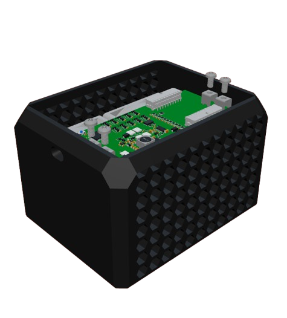

BMS Dashboard
Initializing dashboard...
UCR EV Lab
Pack Voltage
-- V
Pack Current
-- A
Peak Temperature
-- °C
Fan 1 Speed
-- RPM
Fan 2 Speed
-- RPM
Simulate Data
Actual Testing Mode
ELoad Telemetry
E-Load Control
Target Voltage (V_SET)
Target Current (I_SET)
Fan Cooling
PWM Duty Cycle